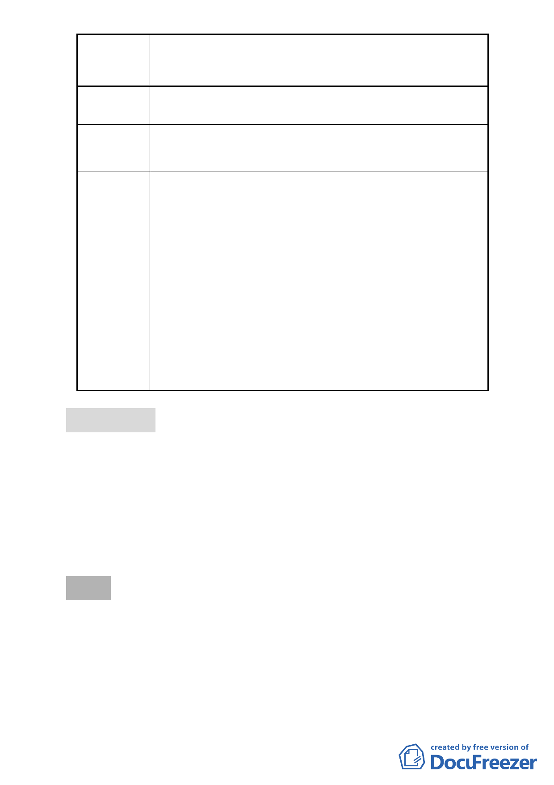

案名
變更臺北市北投區新民段二小段 497-3、497-4、大業段一
小段 2-1、2-3、3-6 地號人行步道用地及特定觀光商業專用
區為廣場用地計畫案
為臺北市聯合醫院北投門診部使用，爰無變更為廣場用地
之必要。
建議辦法 陳情之兩筆土地不作變更。
委員會
決議
本案除以下文字修正外，餘依市府所送計畫書、圖修正通
過。
（一）本案依市府說明係屬細部計畫變更，計畫書、圖請
配合修正。
（二）計畫書第 1 頁計畫緣起第三段誤繕為「特種觀光商
業專用區」，請修正為「特定觀光商業專用區」。
（三）計畫書第 6 頁表三，請循例將原計畫兩不同分區及
用地之變更位置、面積分別羅列，以資明確。變更
理由刪除「並供大樓啟用營運後車輛臨時停車空
間，避免車輛臨停造成附近交通之衝擊」一段文字。
（四）計畫書第 6 頁伍、事業及財務計畫有關土地取得費
用，請市府另行確認。
（五）計畫書、圖之地形圖資料請依現況更新。
肆、臨時動議
提案人：洪委員鴻智
案由：針對 99 年 5 月 19 日「修訂臺北市『基隆河（中山橋至成
美橋段）附近地區土地使用分區與都市設計管制要點』（北
段地區）計畫案」暨該案計畫範圍內九件「2010 年臺北好
好看」申請案第二次專案小組會議結論提請委員會議討
論，以確認審議方向及原則，俾利後續審議作業之進行
決議：
一、有關99年5月19日第二次專案小組會議結論經本次委員會議
討論，達成下述共識：
（一）「2010年臺北好好看」申請案訂有99年9月前開工之開發時
程限制等因素，同意專案小組委員建議與該地區刻正審議
之計畫案分開處理，以符實際需要。並以申請當時之都市
- 18 -